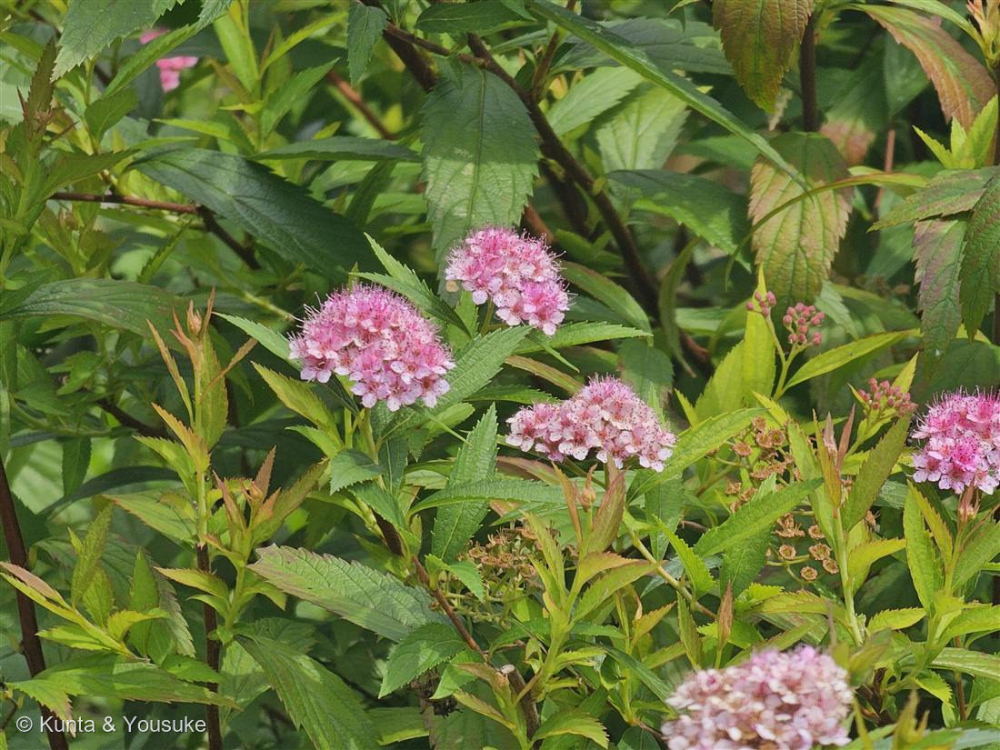

地図を読み込んでいるよ…
🔍 写真も地図も、押しているあいだ拡大して見られるよ（スマホは指を置いてすこし待ってね）。
🌍 の地図＝この子がもともと自生している場所を緑に。日本・東アジア。
⚠ 地図は国（日本と中国だけ県・省）までしか塗れないから、ほんとうの分布より広く見えていることがあるよ。地図はだいたいの場所。正確なところは、上の文を見てね。
シモツケ
Spiraea japonica L.f.
別名 · スピラエア（シモツケ属）
バラ科 · Rosaceae（シモツケ属 Spiraea）
名前と学名の由来
- Spiraea（スピラエア）＝ギリシャ語 speira（螺旋・花輪）から。しなやかな枝が花輪（リース）に使われたことにちなむ。
- japonica（ヤポニカ）＝「日本の」。
- 和名シモツケ（下野）＝下野国（しもつけのくに＝今の栃木県）で見つかった、という説にちなむ。
この植物のこと
- バラ科シモツケ属の落葉低木。日本・東アジア原産。夏、枝先に半球状の花のかたまり（散房花序）をつけ、ピンク〜紅の小花が密集する。
- 長く突き出た雄しべが、線香花火のようにふわふわ見えるのが魅力。葉は重鋸歯で、園芸品種は新芽が黄金〜赤銅色になる（写真の明るい葉と赤みの新芽）。
- この半球の花のかたち、No.004 ランタナやNo.006 コバノランタナとそっくり——でもあちらはクマツヅラ科、こちらはバラ科。別々の科が似た「まあるい花」にたどりついた（収れん）んだね。
- 白い花のコデマリ・ユキヤナギも、同じシモツケ属の仲間。花のあとに刈り込むと、また咲くことも。